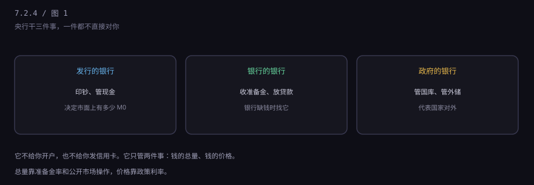
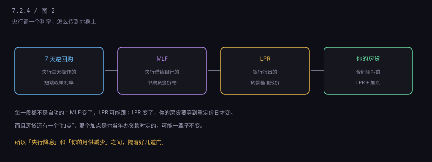
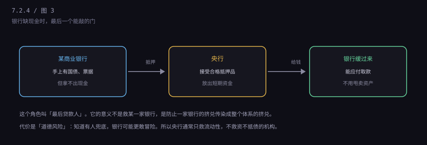
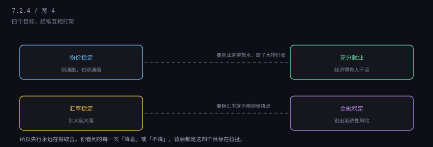

约 0.2 万字 · 4 张图 · 它不给你开户，却能影响你的房贷月供
很多人把中国人民银行和中国银行搞混。后者是一家商业银行， 你可以去存钱；前者是政府部门，你进不去，也不办业务。
央行不接触你我，它只接触两类对象：商业银行和政府。 商业银行在它那儿开账户、存准备金、借钱； 政府把国库放在它那儿，发债、收税都走它的账。
所以央行的所有动作，都是通过银行传导到你身上的。 这也是为什么它的政策总有"滞后"和"打折"——中间隔着几千家银行的决策。
教科书上有个经典说法：央行是"发行的银行、银行的银行、政府的银行"。

第一个身份最好理解：市面上流通的人民币，都是它发行的，它是唯一的源头。
第二个身份最关键：它给商业银行立规矩（准备金率、资本要求）、 给它们提供账户和清算、在它们缺钱时借钱给它们。 这是"银行的银行"。
第三个身份：它代理国库，管理外汇储备，代表国家参加国际金融事务。 财政部发国债，钱收到哪儿、怎么划，都走央行。
第一个旋钮是存款准备金率。降准就是把锁在央行的钱松开一点， 让银行有更多可贷资金。7.2.3 讲过，这里不重复。
第二个旋钮是公开市场操作。名字很学术， 实际就是：央行每天在市场上买卖短期债券，或者跟银行做回购， 把手里的钱放出去或者收回来。
逆回购（央行把钱借给银行，银行拿债券做抵押）就是"放钱"， 到期逆回购就是"收钱"。新闻里说的"开展 7 天逆回购 2000 亿元"， 就是这个操作。
这两个旋钮的区别是：准备金率是"长期、一次性、影响面大"， 公开市场操作是"短期、天天做、微调"。前者像调水库闸门，后者像拿水瓢舀水。
如果说总量是"放多少水"，价格就是"水费多少"。央行主要通过利率来影响。

链条是这样的：央行定一个短期政策利率（现在主要是 7 天逆回购利率）， 这个利率决定银行从央行拿钱的成本；银行之间的借钱成本跟着变； 然后银行报出 LPR（贷款市场报价利率），这是给客户的报价基准； 你的房贷、企业贷款，就按"LPR + 一个加点"来定。
这里有两个关键点，很多人不知道。
第一，LPR 是银行报的，不是央行定的。 央行只是通过政策利率去影响它，不能直接命令。 所以你会看到"央行降了，LPR 没动"的情况。
第二，你的房贷加点，是签合同时定的，可能一辈子不变。 2020 年之后转成 LPR 定价的房贷，每年有一个"重定价日"， 到那天才按最新的 LPR 调整。所以降息之后，你的月供可能要等到明年 1 月才变。
这是央行最戏剧化的一个角色。当某家银行突然缺现金、 市场上的其他银行又不敢借给它时，它可以拿合格资产去央行抵押换钱。

为什么要有这个角色？因为银行之间的信任是链式的： A 银行缺钱，B 银行看到了就不敢借给它，怕它倒； B 不借，C 也开始怀疑；最后所有银行都捂着钱不借，整个市场冻住。 2008 年雷曼倒下后，全球银行间市场就是这么冻住的。
央行的作用是在这条链上插一脚：你们不借，我借。 只要央行还愿意借，恐慌就不会自我强化。
但这带来一个副作用，叫道德风险： 知道有人兜底，银行可能更敢冒险。 所以各国央行都有个原则——只救"流动性危机"，不救"资不抵债"。 前者是暂时的周转问题，后者是已经亏空了，该破产就破产。 这个界线在实际操作中很难划清，也是每次危机都要争论的事。
央行的目标不止一个，而且经常冲突。

要刺激就业，就得放水；放了水，物价可能涨。 要稳住汇率，就不能随便降息（降了息，钱往外跑，汇率撑不住）。 要防金融风险，就得收紧；收紧了，经济又降温。
这就是为什么央行的措辞总是很谨慎——"稳健"、"灵活适度"、"精准"， 每个词都在表达一种取舍。你看到的是"降了 10 个基点"， 背后是这几个目标之间反复权衡的结果。
很多人有个直觉：央行印钱，物价就该涨。这个直觉在有些时候成立， 但很多时候不成立，原因在于"钱去了哪"。
央行放出来的钱，先到银行手里。如果银行不放贷，钱就趴在准备金账户上， 这叫"宽货币、紧信用"——市面上并没有多出钱来。
只有当这些钱被贷出去、变成企业的投资、居民的消费， 才会推高需求、推高物价。所以关键不是"印了多少"，是"有多少变成了支出"。
另一个去向是资产：如果钱流进了房地产、股市，推高的是资产价格， 不是 CPI。这就是为什么过去十几年，很多国家货币扩张得厉害， 但 CPI 一直很低——钱都去买房买股票了。
不用记那些工具的名字，记住三个判断就够了。
一看方向：降准、降息、逆回购放量，都是"松"； 升准、加息、正回购，都是"紧"。先判断大方向。
二看传导：松了之后，LPR 动没动？银行放贷意愿强不强？ 如果只降准不降 LPR，说明钱在银行体系里空转，效果有限。
三看你的合同：你的房贷是固定利率还是 LPR 浮动？ 重定价日是哪天？这决定了你什么时候能感受到变化。
7.2 这一章到这里。四节连起来看：银行是一本账（7.2.1）， 你存的钱是它欠你的（7.2.2），它靠放贷"造"出钱（7.2.3）， 央行在背后控制总量和价格（7.2.4）。
下一章讲一个特别具体、每个人都经历过的事：去银行开一张卡， 那二十分钟里到底发生了什么。